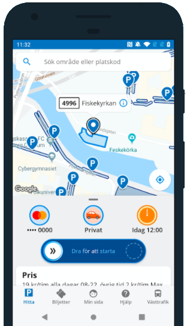

I'm a fullstack developer based in Sweden with a passion for building clean, performant applications. From mobile apps to backend systems, I enjoy working across the full stack.
Outside of code, I enjoy running and cross-country skiing — spending time outdoors and pushing myself with new challenges.

IoT-connected carwash system for OKQ8. Built the backend, mobile app, and real-time machine integration for remote monitoring and control.
Leading technical direction and building fullstack applications. Responsible for architecture decisions, code quality, and mentoring the development team.
Developed and maintained the Parkering Göteborg Android app — added BankID authentication, dark mode, and business parking features. Served as Scrum Master, facilitating sprint ceremonies and driving team delivery.
Developing and maintaining mobile applications for clients, with a focus on Android development.
Three-year programme covering software engineering fundamentals, mobile development, and cross-platform frameworks. Thesis: benchmarking React Native vs Ionic.
Seven summers working at Sweden's iconic canal. Progressed from lock keeper to team lead, managing operations and creating great experiences for thousands of tourists.